lon lat group id
1 -83.88675 44.85686 1 alcona
2 -83.36536 44.86832 1 alcona
3 -83.36536 44.86832 1 alcona
4 -83.33098 44.83968 1 alcona
5 -83.30806 44.80530 1 alcona
6 -83.30233 44.77665 1 alcona資料分析
第六章：地圖
劉昱佑
實踐大學
2026-06-06
地圖
地圖
繪製地理空間資料是最常遇到的視覺化任務之一，它需要超越標準 ggplot2 geoms 的工具。這個挑戰可分解成兩個不同的子問題：
- 繪製地圖——從空間資料來源呈現地理邊界或地形。
- 疊加詮釋資料——把來自另一個資料來源的額外變數（例如人口密度、選舉結果、降雨量）投影到所繪製的地圖上。
本章處理這兩個問題，並按以下方式組織：
- 第 6.1 節——以
geom_polygon()製作的、以多邊形為基礎的地圖，最簡單的方法。 - 第 6.2 節——以
geom_sf()製作的現代簡單要素（sf）地圖。 - 第 6.3 節——地圖投影與座標參考系統。
- 第 6.4 節——以程式化方式處理 sf 資料結構。
- 第 6.5 節——使用衛星影像、以光柵為基礎的地圖。
多邊形地圖
多邊形地圖
在 ggplot2 中繪製地圖最直接的途徑，是把地理邊界表示為普通的多邊形，並以 geom_polygon() 呈現它們。與 R 一起附帶的 maps 套件，提供了可透過 ggplot2::map_data() 存取的邊界資料。
下面的程式碼擷取密西根州的郡層級邊界，並為求清晰而重新命名欄位：
理解資料結構
回傳的資料框包含四個變數：
lon/lat——每個個別多邊形頂點（角點）的經度與緯度。id——該頂點所屬郡的名稱。group——識別每個相連多邊形的唯一整數。由多個分離部分組成的郡（例如島嶼）需要多個 group 值，每個多邊形一個。
從散佈圖到面量圖（choropleth map）
用 geom_point() 把原始頂點繪製成點，會產生一張所有多邊形角點的散佈圖——這是一個有用的診斷步驟，可確認資料已正確載入。把 geom_point() 換成 geom_polygon() 並映射 group，便能把頂點連接成填色的郡界輪廓：
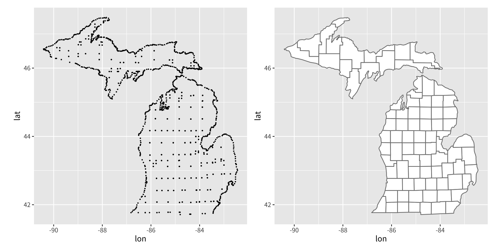
coord_quickmap()
兩張圖都呼叫 coord_quickmap()，它調整圖的長寬比，使一度經度與一度緯度在頁面上占據相等的長度。沒有這個校正，地圖就會在幾何上失真——在赤道附近被水平拉伸，或在較高緯度被壓縮。
coord_quickmap() 是一個快速的線性近似。對於高精度的製圖——尤其是大區域、極區，或出版用的製圖產品——geom_sf() / coord_sf() 工作流程（第 6.2 節）提供了以正規地圖投影為基礎的嚴謹解法。
簡單要素地圖
簡單要素地圖
多邊形方法適用於快速的視覺化，但它有實際的限制。在實務上，向量地理空間資料是以簡單要素（simple features）格式散布的，這是開放地理空間聯盟（OGC）所發布的國際標準。sf 套件（Pebesma 2018）是這個標準在 R 中的標準實作。
ggplot2 透過兩個專用函式與 sf 整合：
geom_sf()——呈現 sf 幾何（點、線、多邊形、多重多邊形……）。coord_sf()——控制套用於整張圖的座標參考系統（CRS）。
ozmaps 套件
以下範例使用 ozmaps 套件（Sumner 2019），它附帶了澳洲行政與選舉邊界的 sf 資料集。我們先檢視 ozmap_states 物件，它包含澳洲所有州與領地的邊界：
Simple feature collection with 9 features and 1 field
Geometry type: MULTIPOLYGON
Dimension: XY
Bounding box: xmin: 105.5507 ymin: -43.63203 xmax: 167.9969 ymax: -9.229287
Geodetic CRS: GDA94
# A tibble: 9 × 2
NAME geometry
* <chr> <MULTIPOLYGON [°]>
1 New South Wales (((150.7016 -35.12286, 150.6611 -35.11782, 150.6…
2 Victoria (((146.6196 -38.70196, 146.6721 -38.70259, 146.6…
3 Queensland (((148.8473 -20.3457, 148.8722 -20.37575, 148.85…
4 South Australia (((137.3481 -34.48242, 137.3749 -34.46885, 137.3…
5 Western Australia (((126.3868 -14.01168, 126.3625 -13.98264, 126.3…
6 Tasmania (((147.8397 -40.29844, 147.8902 -40.30258, 147.8…
7 Northern Territory (((136.3669 -13.84237, 136.3339 -13.83922, 136.3…
8 Australian Capital Territory (((149.2317 -35.222, 149.2346 -35.24047, 149.271…
9 Other Territories (((167.9333 -29.05421, 167.9188 -29.0344, 167.93…sf tibble 的結構
與多邊形方法「每列一個頂點」的布局相對，sf tibble 中的每一列代表一個完整的地理單元。特殊的 geometry 欄位為每一列儲存完整的多邊形定義——可能是由數個不相連多邊形組合而成的 MULTIPOLYGON。
印在 tibble 上方的詮釋資料（幾何類型、邊界框、大地測量 CRS）直接內嵌在 sf 物件中，不需要分析者另行管理。
用 geom_sf() 畫出最簡地圖
由於 geom_sf() 會自動偵測名為 geometry 的欄位，因此不需要提供任何美學映射：
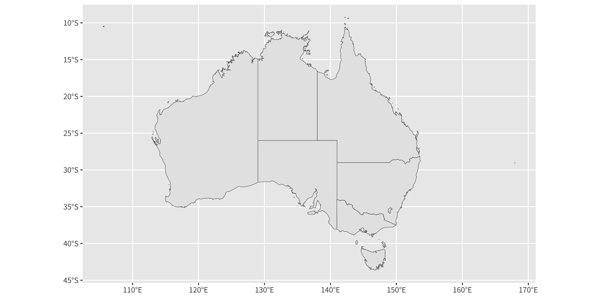
geom_sf() 如何解析 geometry 美學
geom_sf() 仰賴一個其他 geom 都不使用的內部 geometry 美學。它依優先順序由以下三種機制之一解析：
- 隱含——當沒有給定映射、且 sf 物件包含名為
geometry的欄位時，它會被自動使用（如上）。 - 自動偵測——若資料是 sf 物件，
geom_sf()會找到 geometry 欄位，無論其名稱為何。 - 明確——你永遠可以寫
aes(geometry = my_column)來直接指定欄位。當一個資料框包含多個 geometry 欄位時，這是必要的。
coord_sf() 處理地圖投影；它的角色將在第 6.3 節完整討論。
分層地圖
ggplot2 支援堆疊多個 geom_sf() 圖層，以疊加具有不同地理細節層級的資料集。下面的例子畫出以不同顏色填色的澳洲州界，再於其上疊加簡化後的聯邦選舉邊界。
首先需要兩個前處理步驟：
- 篩選——透過
dplyr::filter()從oz_states移除「Other Territories」，因為它橫跨一個遼闊的離岸區域，會使地圖失真。 - 簡化——
rmapshaper::ms_simplify()降低選舉邊界資料（ozmaps::abs_ced）的解析度，以配合最終圖的尺度，大幅加快呈現速度。
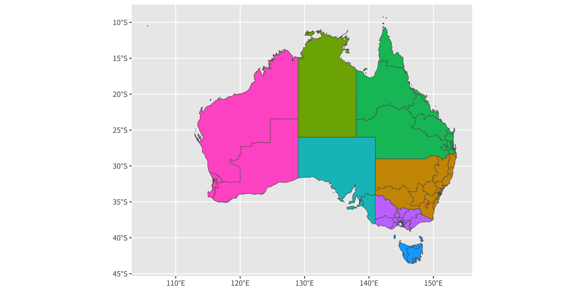
fill = NAME 映射為每個州指派不同的顏色。雖然 NAME 在這裡並未傳達量化資訊，但相同的模式可推廣到任何地區層級的變數：把 NAME 換成像 unemployment_rate 這樣的欄位，便會產生一張面量圖。請注意，當不同圖層取自不同的資料框時，data = 引數要在每一個個別的 geom_sf() 呼叫內指定，而 ggplot() 則不帶預設資料集。
加上標籤的地圖
文字標籤可用兩個 geoms 放置在 sf 地圖上：
geom_sf_label()——把標籤呈現在一個矩形背景框內（當標籤必須在複雜的地圖背景中突顯時適用）。geom_sf_text()——呈現沒有框的純文字。
兩個函式內部都使用 sf::st_point_on_surface() 來計算一個保證落在每個多邊形內的錨點。
下面的例子放大到雪梨都會區，並為每個聯邦選區加上標籤：
sydney_map <- ozmaps::abs_ced |> filter(NAME %in% c(
"Sydney", "Wentworth", "Warringah", "Kingsford Smith", "Grayndler", "Lowe",
"North Sydney", "Barton", "Bradfield", "Banks", "Blaxland", "Reid",
"Watson", "Fowler", "Werriwa", "Prospect", "Parramatta", "Bennelong",
"Mackellar", "Greenway", "Mitchell", "Chifley", "McMahon"
))
ggplot(sydney_map) +
geom_sf(aes(fill = NAME), show.legend = FALSE) +
coord_sf(xlim = c(150.97, 151.3), ylim = c(-33.98, -33.79)) +
geom_sf_label(aes(label = NAME), label.padding = unit(1, "mm"))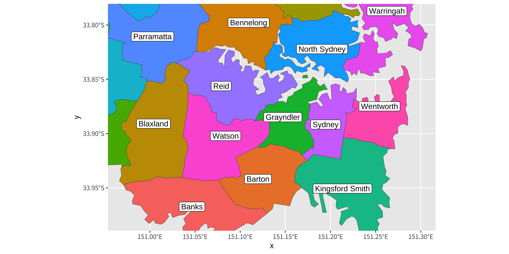
警告：st_point_on_surface 與經緯度資料
執行這段程式碼會觸發一個警告，指出結果對於經緯度座標可能不正確。這個警告之所以出現，是因為許多 sf 幾何演算法假設一個平坦的笛卡兒平面，而經緯度資料則位於橢球面上。對於非極區、中等尺度的地圖，這個近似通常可以接受。對於大陸尺度的地圖或接近極點的區域，資料應在加標籤前重新投影到一個平面的 CRS。
加入其他 geoms
geom_sf() 的行為和其他任何 ggplot2 圖層一樣，並可自由地與標準 geoms 結合。只要座標是在與 sf 圖層相同的空間參考框架中提供的，geom_point()、geom_text() 與其他 geoms 都能如預期運作。
下面的程式碼用 geom_point() 把澳洲各首府的位置——以一個經緯度值的普通 tibble 儲存——疊加到選舉地圖上：
oz_capitals <- tibble::tribble(
~city, ~lat, ~lon,
"Sydney", -33.8688, 151.2093,
"Melbourne", -37.8136, 144.9631,
"Brisbane", -27.4698, 153.0251,
"Adelaide", -34.9285, 138.6007,
"Perth", -31.9505, 115.8605,
"Hobart", -42.8821, 147.3272,
"Canberra", -35.2809, 149.1300,
"Darwin", -12.4634, 130.8456
)
ggplot() +
geom_sf(data = oz_votes) +
geom_sf(data = oz_states, colour = "black", fill = NA) +
geom_point(data = oz_capitals, mapping = aes(x = lon, y = lat), colour = "red") +
coord_sf()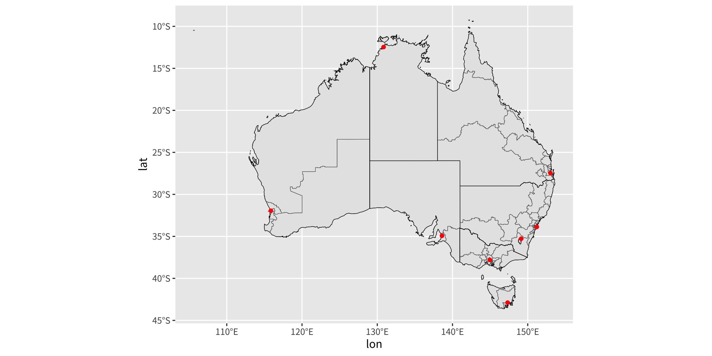
geom_point() 中任何可用的美學都能編碼額外的詮釋資料。例如，若 oz_capitals 包含一個記錄每個都會區內聯邦選區數目的欄位，把該欄位映射到 size 便會在選舉邊界上疊加一張比例符號地圖。
地圖投影
地圖投影
把經度與緯度當作普通的笛卡兒座標軸，在小尺度時是個方便的簡化，但在較大尺度時，由於兩個根本問題，它會變得在幾何上不準確。
問題 1——地球的形狀
地球是一個扁球體，既非平面也非完美的球。因此，把一對座標（經度、緯度）對應到一個精確的物理位置，需要一組幾何假設。這組假設——參考橢球的形狀、極軸的位置、海平面的定義，以及本初子午線的位置——被稱為大地基準（geodetic datum）。
兩個常用的基準是：
- NAD83（北美基準 1983）——為北美做了良好的校準。
- WGS84（世界大地測量系統 1984）——GPS 接收器與大多數現代地理空間資料集所使用的全球標準。
相同的一對經緯度，在不同的基準下可能對應到物理上不同的位置——這種差異在某些區域可能超過許多公尺。
問題 2——把橢球投影到平面上
印刷的或螢幕上的地圖本質上是二維的，然而地球表面是彎曲的。任何把橢球面「攤平」到平面上的方法都不可避免地引入失真。地圖投影（map projection）定義了哪些幾何性質被保留、哪些被犧牲。
兩個常被提及的投影族是：
- 等積投影——地球上面積相等的區域在地圖上占據相等的面積。局部形狀可能顯得失真。
- 保角投影——局部形狀被保留（每一點的角度都正確）。面積被失真，在高緯度往往很嚴重（麥卡托投影是最熟悉的例子）。
沒有任何單一投影能同時保留面積與形狀——分析者必須選擇一個適合地圖預期用途的投影。
座標參考系統（CRS）
座標參考系統（coordinate reference system, CRS）是地理座標如何被轉換成 2D 地圖的完整規格。它結合了：
- 大地基準。
- 投影類型（例如麥卡托、蘭伯特保角圓錐、亞爾伯斯等積）。
- 投影參數（原點、標準緯線、偽東距／偽北距、單位）。
sf 物件把它的 CRS 儲存為內嵌的詮釋資料，可透過 sf::st_crs() 存取：
Coordinate Reference System:
User input: EPSG:4283
wkt:
GEOGCRS["GDA94",
DATUM["Geocentric Datum of Australia 1994",
ELLIPSOID["GRS 1980",6378137,298.257222101,
LENGTHUNIT["metre",1]]],
PRIMEM["Greenwich",0,
ANGLEUNIT["degree",0.0174532925199433]],
CS[ellipsoidal,2],
AXIS["geodetic latitude (Lat)",north,
ORDER[1],
ANGLEUNIT["degree",0.0174532925199433]],
AXIS["geodetic longitude (Lon)",east,
ORDER[2],
ANGLEUNIT["degree",0.0174532925199433]],
USAGE[
SCOPE["Horizontal component of 3D system."],
AREA["Australia including Lord Howe Island, Macquarie Islands, Ashmore and Cartier Islands, Christmas Island, Cocos (Keeling) Islands, Norfolk Island. All onshore and offshore."],
BBOX[-60.56,93.41,-8.47,173.35]],
ID["EPSG",4283]]印在上面的冗長眾所周知文字（well-known text, WKT）字串明確地描述了 CRS。一個遠為精簡的表示是 EPSG 代碼——由 EPSG 大地測量參數資料集（https://epsg.org）所指派的唯一整數。oz_votes 的預設 CRS 對應到 EPSG 4283（GDA94）：
用 coord_sf() 改變投影
coord_sf() 控制套用於整張圖的 CRS。預設情況下它採用第一個 sf 圖層的 CRS。要覆寫這點，請給 crs 引數一個有效的 CRS：
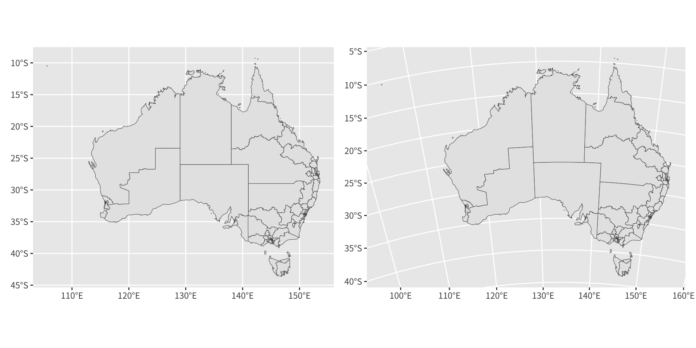
EPSG 3112 是 GDA94 / 澳洲地球科學蘭伯特投影，它使整個澳洲大陸的面積失真最小化。兩個面板之間輪廓形狀的差異，說明了地圖的視覺印象會隨投影的選擇而有多大的改變。
關於 R 中地圖投影的詳盡論述，請見 Geocomputation with R（https://geocompr.robinlovelace.net/）。
處理 sf 資料
處理 sf 資料
除了繪圖，sf 套件還提供一組豐富的函式，用於檢視與轉換空間物件。本節介紹最常需要的工具；完整文件可見於 https://r-spatial.github.io/sf/。
動機：複雜的地理單元
簡單要素格式的一個關鍵優勢，是它能在單一列中表示幾何上複雜的區域。MULTIPOLYGON 幾何編碼了一組不相連的多邊形，這自然地建模了像群島或帶有飛地的領地這樣的區域。
新南威爾斯州的 Eden-Monaro 聯邦選區是一個好例子。它由以下部分構成：(1) 一個中間有洞的大型大陸多邊形（澳洲首都領地是一個完全被 Eden-Monaro 包圍的獨立政治單元，而選舉邊界不會越過州界），以及 (2) 一個分離的小島。下面兩個面板都由單一列的 sf 資料產生：
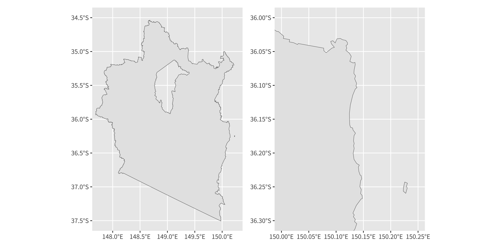
擷取 geometry 欄位
geometry 欄位可用 dplyr::pull() 分離成一個獨立的 sfc（simple feature column，簡單要素欄）物件：
詮釋資料輔助函式
數個 sf 函式可從一個幾何物件擷取詮釋資料：
st_geometry_type()——回傳幾何類型（例如MULTIPOLYGON、POLYGON、LINESTRING、POINT）。st_dimension()——回傳空間維度計數：XY 資料為 2，XYZ 為 3。st_bbox()——以具名數值向量（xmin、ymin、xmax、ymax）回傳邊界框。st_crs()——以一個包含 EPSG 代碼與 WKT 字串的清單回傳座標參考系統。
用 st_cast() 在幾何類型之間轉換
MULTIPOLYGON 可用 st_cast() 分解成它構成的 POLYGON 物件。對 Eden-Monaro 而言，這揭示出組成該選區的兩個不同多邊形：
實際應用：分離出島嶼
昆士蘭州的 Dawson 選區由 69 個離岸島嶼加上一個大型沿海大陸區域組成——共 70 個多邊形構件：
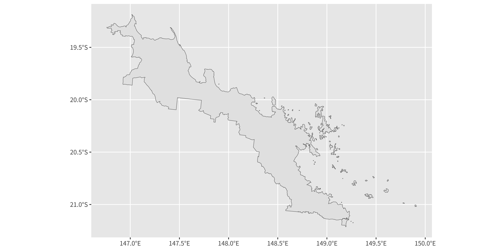
要只繪製島嶼，可轉換成個別多邊形，用 st_area() 計算每個多邊形的面積，用 which.max() 找出最大的多邊形（大陸），並以負索引把它排除：
[1] 69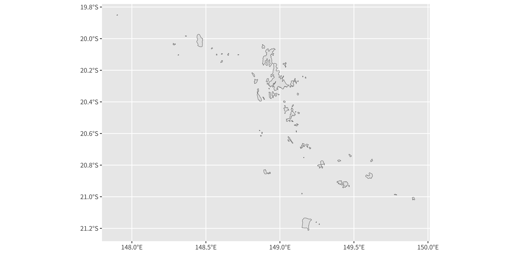
這個「轉換 → 量測 → 取子集」的工作流程，可推廣到任何必須獨立處理一個區域之地理構件的情境——例如把大陸與島嶼領地分開，或在一個複雜的多重多邊形中找出最大的相連區域。
光柵地圖
光柵地圖
除了以向量為基礎的簡單要素外，地理空間資訊也常被儲存為光柵資料（raster data）：一個規則的矩形儲存格（像素）格網，其中每個格子保存一個或多個數值。光柵是衛星影像、數值高程模型、土地覆蓋分類與格網化氣候資料集的自然格式。
許多光柵檔案格式——最著名的是 GeoTIFF——內嵌了空間詮釋資料（大地基準、CRS、空間範圍、像素大小），讓影像能被準確地定位在地球表面上。R 可透過 GDAL（地理空間資料抽象函式庫，https://gdal.org/）讀取這些格式，sf 套件透過 sf::gdal_read() 公開了它。在實務上，更高階的套件會透明地處理這件事。
用 stars 套件讀取光柵資料
stars 套件（Pebesma 2020）提供讀取與操作時空光柵陣列的工具。下面的例子匯入一個 GeoTIFF 檔，內含由向日葵 8 號（Himawari-8）地球同步衛星拍攝、原始來源為澳洲氣象局的可見光衛星影像。
RasterIO 清單被直接傳給 GDAL：nBufXSize 與 nBufYSize 在匯入時把影像降採樣為 600 × 600 像素，在保留足夠視覺化細節的同時減少記憶體使用：
stars object with 3 dimensions and 1 attribute
attribute(s), summary of first 1e+05 cells:
Min. 1st Qu. Median Mean 3rd Qu. Max.
IDE00422.202001072100.tif 0 0 0 18.12981 0 255
dimension(s):
from to offset delta refsys point x/y
x 1 600 -5500000 18333 Geostationary_Satellite FALSE [x]
y 1 600 5500000 -18333 Geostationary_Satellite FALSE [y]
band 1 3 NA NA NA NA stars 物件的結構
stars 物件是一個 n 維的具標籤陣列。對於這張衛星影像，三個維度是：
| 維度 | 說明 |
|---|---|
x |
欄（東西向），與一個 CRS 關聯 |
y |
列（南北向），與一個 CRS 關聯 |
band |
顏色通道：1 = 紅，2 = 綠，3 = 藍 |
由於影像是灰階的，三個波段都帶有相同的值。更複雜的資料集可能包含一個 time 維度（多時相合成）或額外的波段（超光譜感測器）。每個空間維度的 CRS 都與資料一起儲存。
用 geom_stars() 繪製光柵資料
由 stars 套件提供的 geom_stars()，把光柵像素值映射到 fill 美學。一張最簡的圖會把 ggplot2 預設的循序藍色尺度套用到原始的 0–255 像素值：
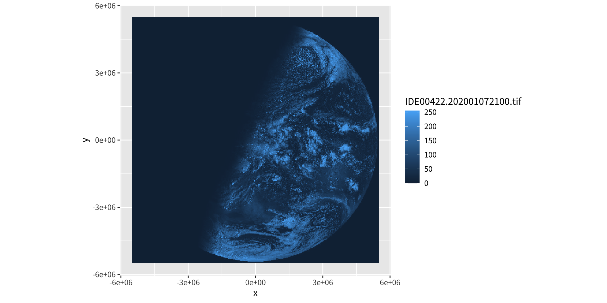
藍色反映的是 ggplot2 的尺度選擇，而非原始影像的外觀。要以灰階顯示影像——對可見光衛星影像而言是更忠實的呈現——請套用 scale_fill_gradient(low = "black", high = "white")。
用 facet_wrap() 分離波段
由於 sat_vis 包含三個波段，它們可用 facet_wrap() 顯示在不同的面板中。對於灰階影像，三個面板都會相同；對於多光譜影像，這些面板會揭示各感測器所擷取的空間型態：
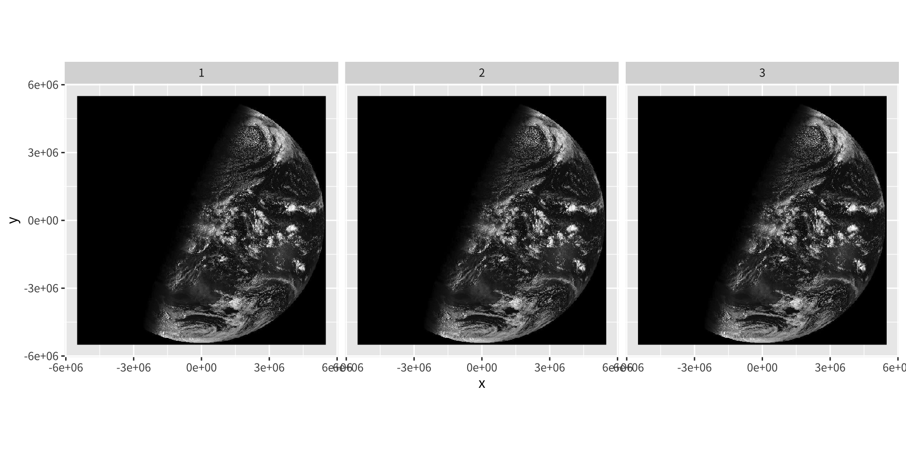
把向量資料重新投影以配合光柵的 CRS
不重新投影的話，把 oz_states（EPSG 4283）疊加到 sat_vis（地球同步投影）上會使圖層錯位。sf::st_transform() 把向量資料重新投影以配合光柵的 CRS：
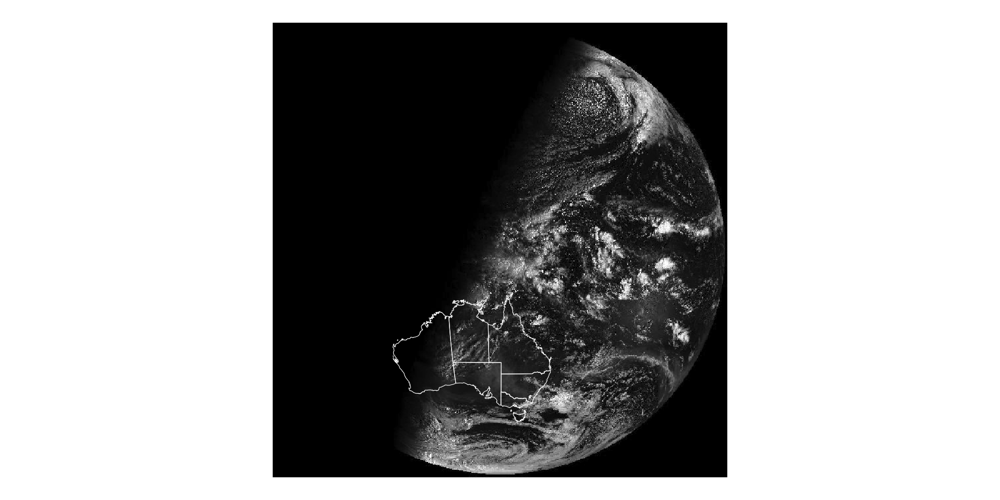
有了正確重新投影的州界，白色輪廓就會精確地與衛星影像中可見的海岸線對齊。
在重新投影的光柵上疊加點資料
表格式的點資料（普通資料框中的經緯度欄）在疊加到重新投影的光柵上之前，也必須經過轉換。所需的兩步驟工作流程是：
- 用
st_as_sf()轉換成 sf 物件，把來源 CRS 指定為 WGS84（EPSG 4326）。 - 用
st_transform()重新投影到光柵的 CRS。
cities <- oz_capitals |>
st_as_sf(coords = c("lon", "lat"), crs = 4326, remove = FALSE)
cities <- st_transform(cities, st_crs(sat_vis))
ggplot() +
geom_stars(data = sat_vis, show.legend = FALSE) +
geom_sf(data = oz_states, fill = NA, color = "white") +
geom_sf(data = cities, color = "red") +
coord_sf() +
theme_void() +
scale_fill_gradient(low = "black", high = "white")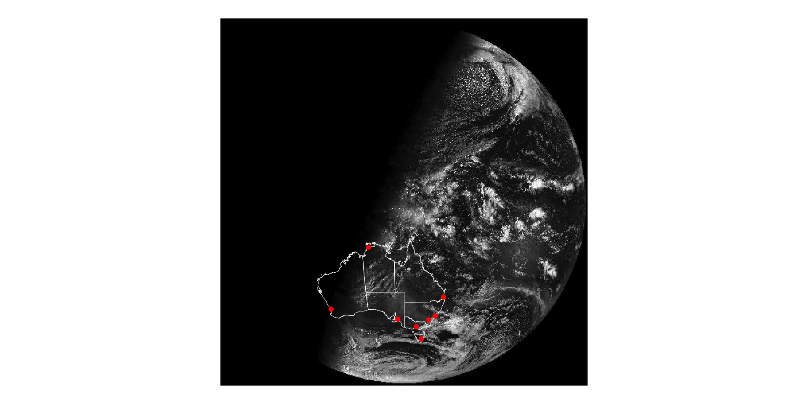
詮釋這張合成地圖
把各首府位置正確地投影到衛星影像上後，便顯而易見這張影像大約是在達爾文日出時拍攝的：東部的首府（雪梨、墨爾本、布里斯本、坎培拉）位於受光照的區域，而西部的伯斯仍處於黑暗中。城市名稱可用以下方式加上：
mapping: label = ~city
geom_text: parse = FALSE, check_overlap = FALSE, na.rm = FALSE
stat_sf_coordinates: na.rm = FALSE, fun.geometry = NULL
position_nudge 需要做一些標籤位置調整以防止重疊（見第 8 章的標註）。
關於互動式 3D 地圖的提醒： 至於超出 ggplot2 範疇的真正透視視圖或可旋轉 3D 曲面視覺化，rgl 套件（http://rgl.neoscientists.org）是標準工具。
資料來源
資料來源
各式各樣的 R 套件提供現成可用的地理空間資料集，可搭配 geom_sf() 與相關工具使用：
以美國為主的資料
USAboundaries（https://github.com/ropensci/USAboundaries）——美國本土的州、郡與郵遞區號邊界，外加可回溯到 1600 年代的歷史邊界（Mullen & Bratt 2018）。
tigris（https://github.com/walkerke/tigris）——隨需下載美國人口普查局的 TIGER/Line shapefile。提供州、郡、郵遞區號與普查地段邊界，以及道路、水體與其他地理圖層（Walker 2019）。
全球資料
rnaturalearth（https://CRAN.R-project.org/package=rnaturalearth）——包裝 Natural Earth 專案（https://naturalearthdata.com/），一個免費、維護良好的全球資料集。包含每個國家的國界與第一級行政區劃（州、省、地區、郡）（South 2017）。
osmar（https://cran.r-project.org/package=osmar）——與 OpenStreetMap API 介接，以擷取細緻的向量資料：街區層級的個別街道、建築、公園與興趣點（Eugster & Schlesinger 2010）。
處理你自己的 shapefile
如果地理空間資料已以 ESRI Shapefile 格式（.shp）在本機可用，可用以下方式直接把它們匯入 R 成為 sf 物件：
一旦載入，這個物件就與 geom_sf()、coord_sf() 以及本章涵蓋的所有其他 sf 感知函式完全相容。
版權聲明
版權聲明。 本教材改編自 ggplot2: Elegant Graphics for Data Analysis (3e)。所有權利均由原作者與出版者保留。
僅供非商業用途。 本教材嚴格限定用於教育目的，不得用於商業獲利。
適當標註出處。 任何對本教材的重製、散布或使用，都必須適當標註原始出處。

ggplot2: Elegant Graphics for Data Analysis